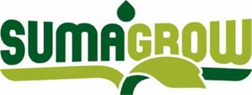

Challenges and
Use Cases
Real-world needs, scenarios and use cases to inspire you!
Use Cases: Vidi
Which Linked Open Web Data are available? Who is interested in using them? How can we exploit them? What usage scenarios are there? In addition to the samples presented for the Veni competition we can now offer few more use cases.
Below you will find large-scale scenarios and use cases for the deployment, evaluation and exploitation of challenge submissions. The use cases came from consultation among LinkedUp Project members and associated partners.
- Science Educationizer for Interdisciplinary Content & Data
- NaturalEurope
- SemaGrow
- MisMuseos
- Local and Hyper-Local Learning
They present actual, real-life challenges that the related institutions are facing and addressing.
They aim to provide challenge participants with inspiration and examples of the kinds of problems that submissions can address.
Science Educationizer for Interdisciplinary Content & Data
Proposer
 Elsevier is a world-leading provider of scientific, technical and medical information products and services. The company works in partnership with the global science and health communities to publish more than 2,000 journals, including The Lancet and Cell, and close to 20,000 book titles, including major reference works from Mosby and Saunders. Elsevier’s online solutions include ScienceDirect, Scopus, Reaxys, ClinicalKey and Mosby’s Nursing Suite, which enhance the productivity of science and health professionals, and the SciVal suite and MEDai's Pinpoint Review, which help research and health care institutions deliver better outcomes more cost-effectively.
Elsevier is a world-leading provider of scientific, technical and medical information products and services. The company works in partnership with the global science and health communities to publish more than 2,000 journals, including The Lancet and Cell, and close to 20,000 book titles, including major reference works from Mosby and Saunders. Elsevier’s online solutions include ScienceDirect, Scopus, Reaxys, ClinicalKey and Mosby’s Nursing Suite, which enhance the productivity of science and health professionals, and the SciVal suite and MEDai's Pinpoint Review, which help research and health care institutions deliver better outcomes more cost-effectively.
Context
A plethora of educational and informative resources already exist, in several heterogeneous formats, accessible at different levels and conditions – freely available online; from repositories accessed via API, under subscriptions/fees, etc…
Problem
Most content and data is not created, designed or formatted specifically as learning objects for educational purposes. But much of it has value for educational purposes if given the appropriate context, threaded together with a larger curriculum, and described in a manner that is meaningful to the user. Achieving this can be particularly valuable to an educator who is approaching a new field for the first time and needs to find material for a curriculum. This can also be valuable for an educator who is approaching a field that is inherently interdisciplinary and candidate data and content can come from disparate resources.
Solution
We envisage an Educationizer application as following. An instructor runs the Educationizer application. By entering appropriate keywords, the application retrieves numerous results of data, content, and multimedia assets. One feature would have the results appear in clusters familiar to the instructor and matching the course needs. Another feature would allow for large search result sets to be further sorted by using interdisciplinary terms -- such as industry names, geography terms, etc.
Following the execution of the Use Case, the instructor will have a large set of relevant content and datasets that will complement a course that they are preparing a curriculum for. Next, the instructor can apply multiple facets to organize the material into a curriculum.
One example facet would be an industry facet. Because the content and datasets are expected to be interdisciplinary, the instructor would greatly benefit from the ability to filter based upon industry applications that the material applies to.
Another example facet would be one that suggests where the content or data would fit with the structure of the curriculum. With one or multiple facets applied to the candidate content, the instructor would then be able to save the list of suggestions and begin to review them. Upon review, they can choose to "keep" or "remove" the suggestion. Upon completion, the instructor can generate a report of the content they chose to keep. This report will include descriptive metadata of the material including its name, source, format, and values from the Educationizer facets.
Visit our call page to find out how to enter!
NaturalEurope
Proposer
 NaturalEurope
is a project co-funded by EC under the ICT-PSP programme which suggests a coordinated solution at European level in order to overcome such barriers, by connecting the digital collections of a number of European Natural History Museums (NHMs).
NaturalEurope
is a project co-funded by EC under the ICT-PSP programme which suggests a coordinated solution at European level in order to overcome such barriers, by connecting the digital collections of a number of European Natural History Museums (NHMs).
Context
In an era where natural history and environmental education inadequacy in formal and informal contexts is becoming an increasingly challenging issue, harvesting the potential of European digital libraries appears as a very attractive option. However, an impressive abundance of high quality digital content that is available in Natural History Museums (NHMs) around Europe remains largely unexploited due to a number of barriers.
Problem
Natural Europe aims at connecting the digital collections of a number of European NHMs with Europeana, and studying the educational methods and deploy the necessary software tools that will allow museum educators to design innovative online pathways through the digital collections of NHMs. To this end, the federation of the Natural Europe digital libraries aims to facilitate: storage, search and retrieval of digital content that is related to Natural History; as well as search and retrieval of content objects related to educational objectives and curricula on Natural History, Environmental Education, and Biological Sciences.
Solution
Natural Europe designs and deploys novel graphical interfaces that facilitate the navigation of educational pathways within digital collections, both from Europeana and the NHMs’ Web sites. It also adapts and tests innovative interactive installations at the NHMs that allow visitors to follow educational pathways through Europeana’s content on Natural History and Sciences, as part of the Museums’ exhibition. Of course the delivered services/solutions are also validated and evaluated through extensive pilot trials with project-internal and external organizations and user groups.
SemaGrow
Proposer
SemaGrow is a project co-funded by the Seventh Framework Programme (FP7) of the European Commision (FP7-ICT-2011.4.4a Intelligent Information Management).
Context
As the trend to open up data and provide them freely on the Internet intensifies, the opportunities to create added value by combining and cross-indexing heterogeneous data at a large scale increase. To seize them, SemaGrow envisages developing scalable, efficient, and robust data services to take full advantage of the data-intensive and inter-disciplinary Science of 2020 and to re-shape the way that data analysis techniques are applied to the heterogeneous data cloud.
Problem
Among the SemaGrow use cases, we found the “Reactive Resource Discovery” quite interesting and in line with LinkedUp themes. This use case addresses the challenges of real time discovery of relevant multimedia resources to support the creation of agricultural educational activities in different ages, levels and contexts.
Searching for relevant online resources (multimedia such as images, videos, sounds, but also Web pages, PPT presentations and others) happens from a rich variety of online sources that provide open Search APIs. The current collections covered by the Agricultural Learning Repository Toolkit are the agricultural collections within ARIADNE, the biodiversity collections in Europeana, as well as the agriculture- and biodiversity-related videos in YouTube and photos in Flickr Commons.
The perspective from which extremely large and very complex agriculture-related data sets are considered is the one of education, during which the users need to cope with reactive resource discovery in order to be able to find, reuse and exploit data resources created in one environment in very different contexts.
Data sets
Data sets
Sector- and domain-specific datasets, such as databases of scientific research publications. Next to the public LinkedUp data repository, challenge participants are eligible to apply for access to non-public corpora provided by LinkedUp consortium partners and affiliated organisations. Access will be granted for research purposes only and decisions will be made on a case-to-case basis.
Solutions
SemaGrow offers SPARQL endpoints that federate SPARQL endpoints over heterogeneous and diverse data sources. The resource discovery and query decomposition component analyses SPARQL queries and uses metadata about the schema used and the instances stored in the various federated data stores in order to break up the original query into the optimal query fragments and decide where to forward each such fragment for execution. “Optimal” in this context involves a multitude of considerations, including minimizing the number of fragments (since joining the results carries considerable computational costs), schema proximity (minimizing the schema translation needed) and load balancing (preferring less used repositories).
Visit our call page to find out how to enter!
Mismuseos
Proposer
 Mismuseos
is a project realizing a meta-museum via a semantic collection of over 17,000 works of art from seven public museums promoted by gnoss.com and intended to enrich the Semantic Web.
Mismuseos
is a project realizing a meta-museum via a semantic collection of over 17,000 works of art from seven public museums promoted by gnoss.com and intended to enrich the Semantic Web.
Context
Until now and in general, the data of the museums are distributed and not connected. There are more than 55,000 museums in 202 countries. The knowledge contained in these spaces has occupied art historians, artists themselves and many teachers for a long time.
Problem
Unfortunately, interesting data consumption and applications is not straightforward with the information contained in the current formats of knowledge representation. But Semantic Web can help. The challenge is linking the resources of different museums (potentially any museum), by making real that possibility for a group of Spanish Greatest Museums. Another challenge is the one to connect cultural and educational worlds in a knowledge ecosystem, valorising cultural information of the cultural heritage for educational purposes (LinkedUp blog post).
Solution
MisMuseos.net shows a case of consumption and use of Linked Data from museums and their valorization in education, through innovative end-user applications, like facet-based searches, semantic context creation and navigation through graphs, which drastically improve user experience. The search engine enables aggregated searches by different facets and summarization of results for each successive search. The solution is built on GNOSS, a semantic and social software platform.
MisMuseos builds a Museums Micro Cloud of Linked, Clean and Curated Data with an underlying specialized and Unified Graph, connecting cultural and educational worlds in a knowledge ecosystem.
MisMuseos.net gathers museum metadata from multiple Spanish Public Institutions. It is a semantic Museum of Museums where users can browse over 17,000 pieces of art and 2,650 artists from seven Spanish Great Museums (a meta-museum): Museo del Prado, Biblioteca Nacional de España (National Spanish Library), Museo Reina Sofía, Museo Bellas Artes de Bilbao, Museo Sorolla, Museo de la Fundación Lázaro Galdiano and Museo del Greco. It works according to the standards of the Semantic Web and the principles of the Linked Open Data Web.
Mismuseos.net obtains the information about cultural goods from the Europeana dataset and the online collections of public Spanish Museums. It also extracts and links data from additional datasets of the LOD cloud, either to supplement information or to generate enriched contexts: Dbpedia, Geonames and Didactalia (a GNOSS project with an index of over 50,000 open educational resources).
Visit our call page to find out how to enter!
Local and Hyper-Local Learning
Proposer
The BBC is the UK’s Public Service broadcaster and the world’s largest broadcaster. It has been committed to education and learning since its first schools broadcast in 1924. This commitment is part of its core mission and drives much of its output.
The BBC's strategy for learning is 'to inspire a life of learning for everyone' by exploiting the educative potential that exists across the full range of the BBC's output and activities, from news to music, science to the arts, sport and drama.
Led by the Learning department, the aim is to work with some of the BBC's best known programmes and brands to maximise their learning value and take advantage of the revolution in technology that brings radio, television and the internet ever closer together. Online is key to delivering offerings as well as running events.
Context
One of the challenges the Product is researching is how to deliver meaningful and relevant content to its audience when they are out and about in the real world. In this context ‘relevant’ means related to their geographical location and ‘meaningful’ means something they would find personally interesting, useful and timely locally and hyper-locally.
Let’s imagine a family out on a day trip – two adults and two children. The children are 8 and 12. During the day they visit a town with an interesting history, a museum in the town, some shops and a remote field which has a monument in the middle of it. During their travels they pass through a number of villages and numerous miles of countryside. Let''s assume the GPS and mobile signals are strong throughout the day so we know their location at any moment, we can send them content and they can respond to that content. Let’s also assume we know something of their media consumption habits and their likes and dislikes.
Problem
The challenge here is threefold. The first is how to make a best guess at what the family might find “interesting, useful and timely” for their locality and hyper-locality, especially given the age range and the possibility there may be a large amount of content and information available. The final two are opposite ends of the spectrum. What to do when there is a large quantity of data and media available but it is either unstructured or structured using vocabularies and knowledge frameworks that are not familiar to the audience. What to do when there is no content and data.
Solution
Using their location data, metadata the BBC has attached to its content, data we collect from them during the day and any open data construct a menu of content, both BBC and from other sources, that can be delivered to the family throughout the day. The content will need to be relevant to their location when they receive it and should be responsive to information they send back. Possible databases include: BBC content data, statistics, historical databases, DBPedia, Wikipedia, Twitter, YouTube, Flickr, Google maps, other Google databases.
It would also be useful to imagine what happens to the service if GPS and/or mobile service drops during the day and/or we know nothing of the family’s habits, likes and dislikes.
There are two other functions we would also like to explore. One is the ability of the family to bookmark their current location, plus any other useful data available at the time, so they can collect and research content at a later time and we can make a useful guess at the reason they set the bookmark. The second function is a facility for the family to create a souvenir of their day out including pictures and any other records they may have taken or made.
Visit our call page to find out how to enter!


The project partners on the LinkedUp Challenge.
The LinkedUp Challenge is organised by the LinkedUp Project